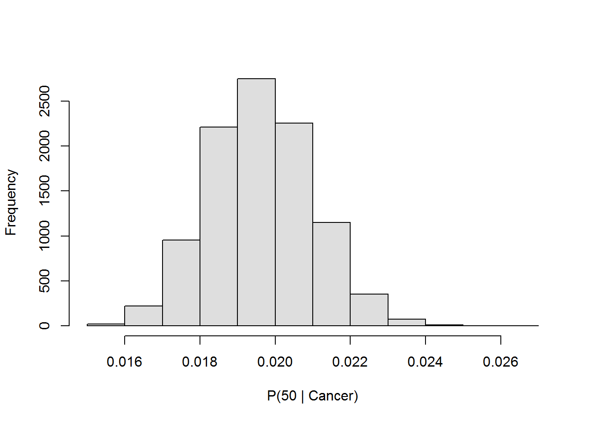
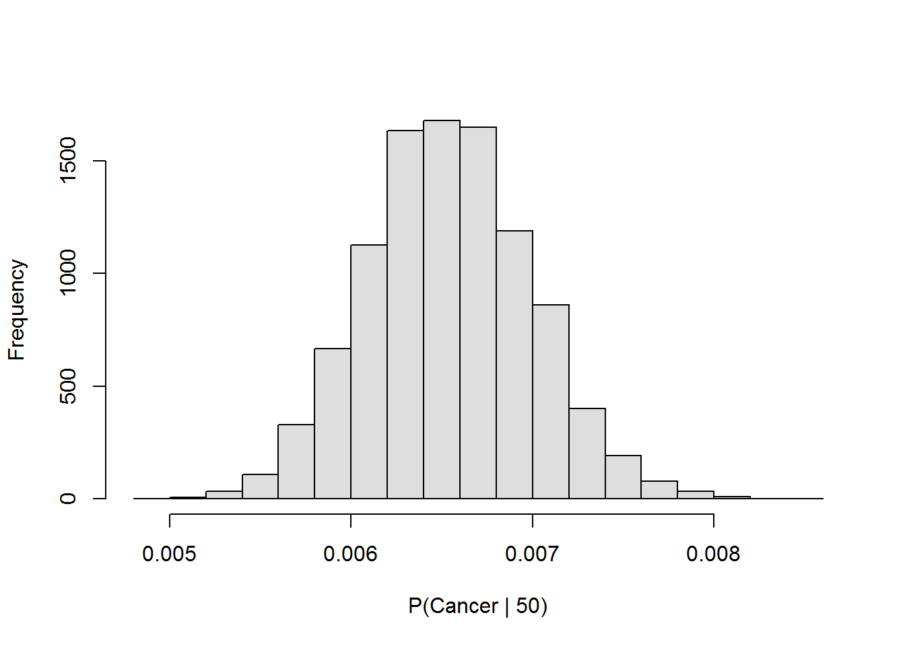
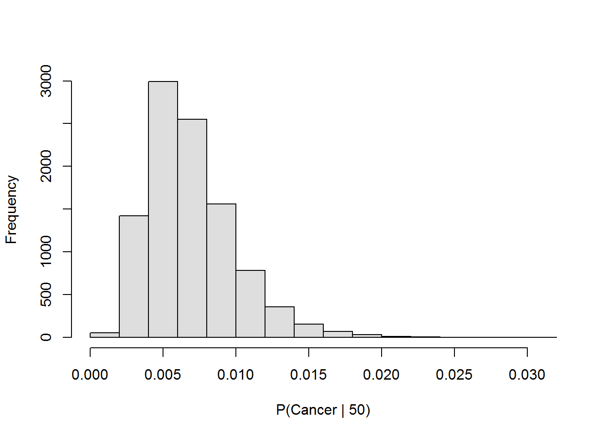
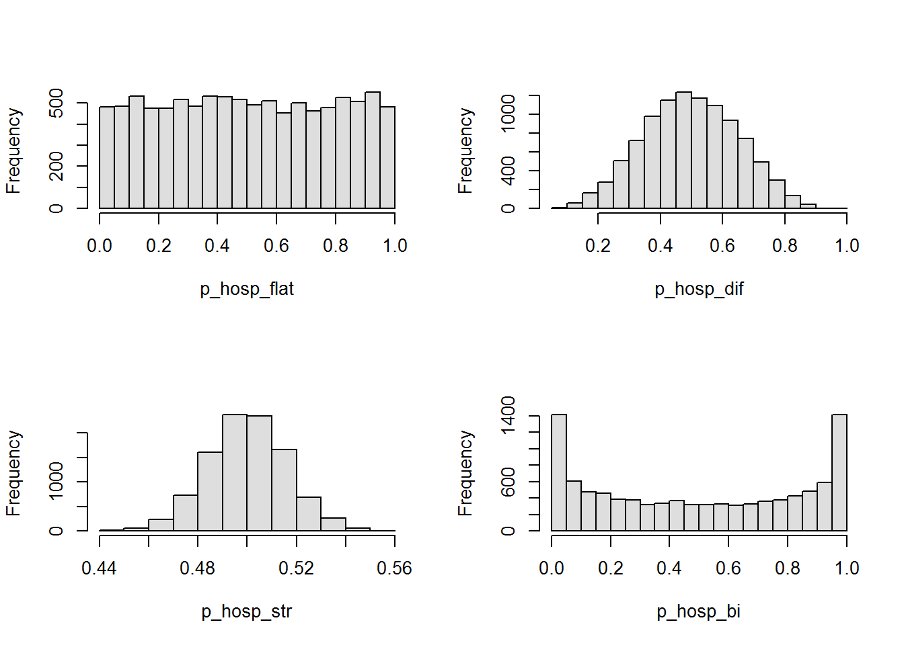
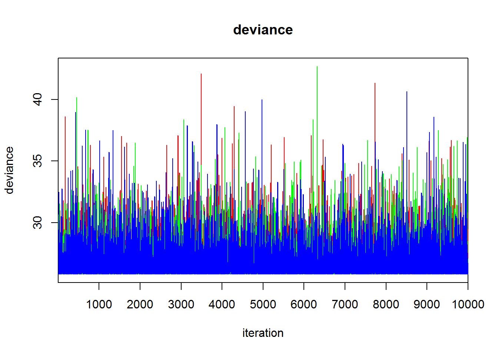
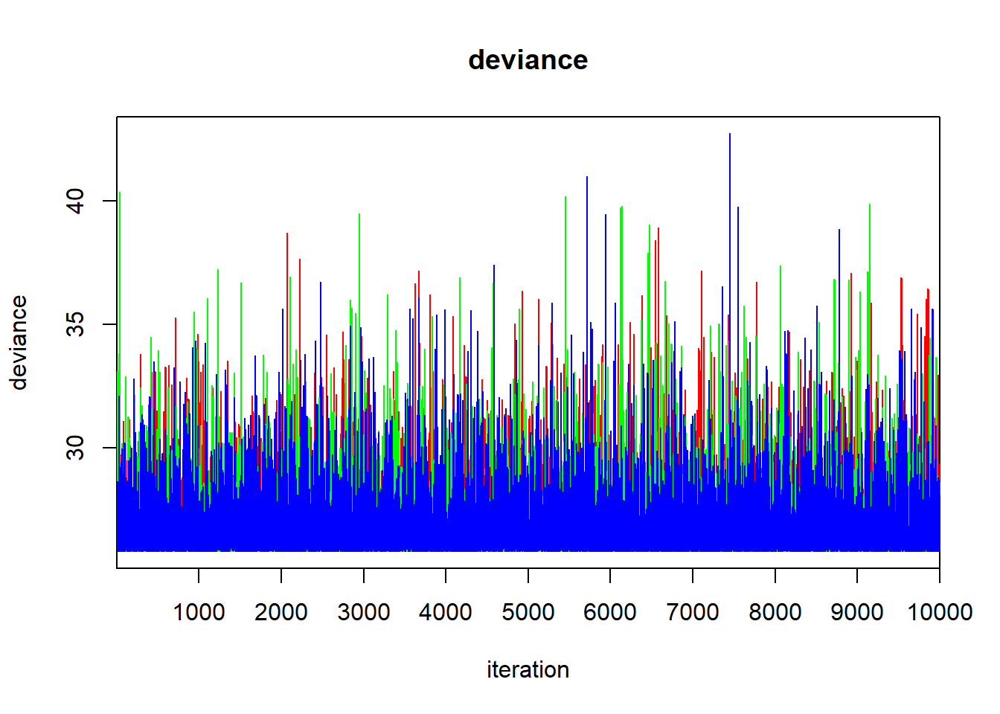
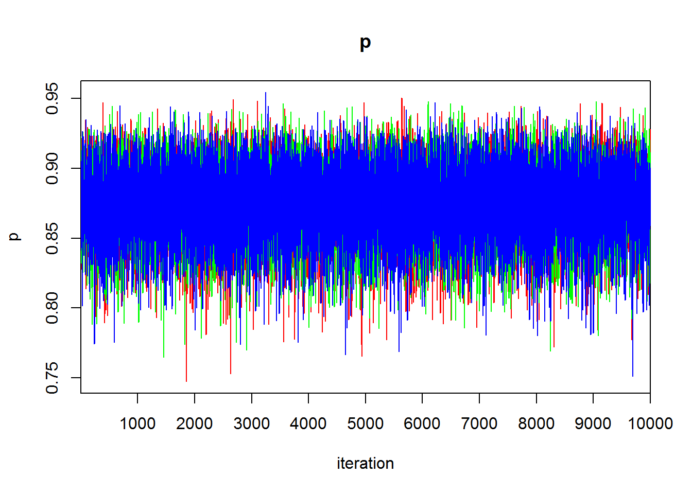
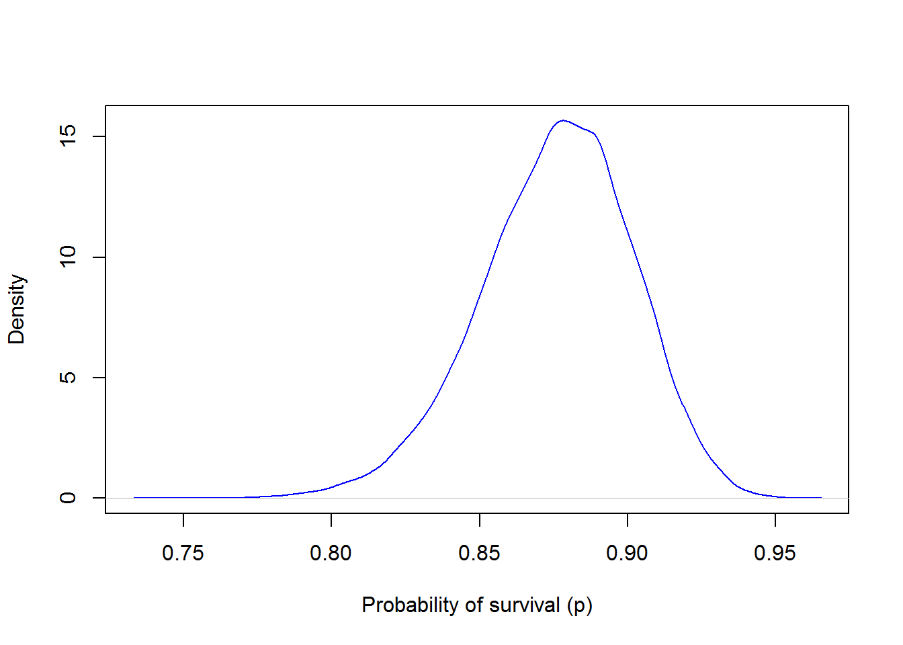
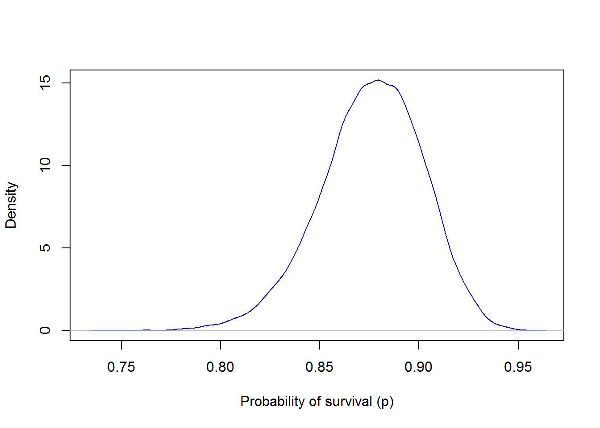

Introduction to Bayesian inference

Introduction
This week we are going to introduce a couple of new concepts including Bayesian inference and the generalized linear model. My rationale for introducing these concepts together is 1) both of these tools rely heavily upon knowledge of probability distributions that we began to build earlier this semester, and 2) we are beginning to move into the realm where we will become more reliant upon methods of estimation other than ordinary least squares (OLS), which is what we have been using for the past two or three weeks for fitting linear models (ANOVA, linear regression, and ANCOVA).
During the next several weeks, I am hoping that we can dive in to the basic underpinnings of the Bayesian framework for scientific inference, along with maximum likelihood estimation as we move through more complex extensions of linear models. This framework has been around for a long time, but only recently has it become really broadly applicable to common analytical problems. There are some fundamental (and philosophical) differences between the use of maximum likelihood estimation (aka “frequentist”) methods and the application of Bayes theorem for answering statistical questions. I am hoping we can touch on some of these during our discussions and show the real, practical strengths of maximum likelihood and Bayesian inference that might actually make you want to use one or the other for certain applications.
For better or worse, there is no way we can possibly do a comprehensive treatment of Bayesian statistics within the context of a survey-style, applied statistics course such as this. We can, however, set you up with some basic tools so you can apply Bayesian inference to commonly encountered situations (t-tests, lm, GLM, LMM, and GLMM) that should allow you to explore these concepts on your own in the future. To achieve this, I would like for us to cover some Bayesian analogs to some of the frequentist tests that we have considered so far this semester. For this reason, we will explore maximum likelihood and Bayesian methods side by side while learning new techniques during the next couple of weeks.
Intro to Bayes Theorem
Bayes Theorem provides the mathematical framework through which Bayesian inference is applied to quantitative questions. The theorem, in the most basic sense, helps us understand the probability of some event given conditions we suspect are related to that event. This elegant theorem was first derived by Reverend Thomas Bayes in the 1700s. The equation was later reworked by Pierre-Simon Laplace to yield the modern version that we use today:
\[P(A|B) = \frac{P(B|A)\cdot P(A)}{P(B)}\]
which is read “the probability of A given B is equal to the probability of B given A times the probability of A, divided by the probability of B”.
A common example application of this theorem that may be of interest to biology students is the probability of having cancer at a given age (thanks Wikipedia!). The example goes something like this:
Suppose we want to know the probability that an individual of age 50 has cancer. We might only have information about the marginal probability of their having cancer given that they are a human (let’s say 1%), and the probability of their being 50 years old given population distribution of ages (let’s just say 3% for the sake of demonstration). To calculate the conditional probability that an individual who is 50 years old has cancer, we would need one more piece of information: the probability that a person with cancer is 50 years old. The calculation is relatively straightforward if we know this number exactly, and we can derive an exact conditional probability. For this example, let’s start by assuming the probability that people who have cancer are 50 years old is 2%. Now we can calculate the conditional probability that a person who is 50 years old has cancer:
Start with the theorem:
\[P(Cancer|Age 50) = \frac{P(Age 50|Cancer)\cdot P(Cancer)}{P(Age 50)}\]
Through substitution we get: \[P(Cancer|Age 50) = \frac{(0.02\cdot 0.01)}{0.03}\]
And now we can solve for the conditional probability: \[P(Cancer|Age 50) = 0.00667\]
Hopefully, you can see from this example and earlier learning about rules of probability why this is such an important theorem in statistical probability theory. In fact, this is one of the reasons for the recent resurgence in the use of Bayes Theorem in applied Bayesian inference in biological and ecological statistics during the past couple of decades. But, if it’s so useful, then why has it only been heavily used recently?
It will quickly become obvious to you that the answer is “computers”. To demonstrate this, let’s consider a slightly more complex example.
Now, let’s assume that we don’t actually have exact information about the probability that individuals who have cancer are age 50. Let’s instead assume that we only have a rough idea about that probability, and that we can put a loose distribution around it. Now, there is no longer an exact mathematical solution for Bayes Theorem but rather an infinite number of potential solutions. If we know the distribution, then we can discretize the distribution and find a finite number of solutions to the theorem that would allow us to describe the probability of our event of interest most of the the time. However, there are cases for which this problem becomes intractable without the use of computers, even when the distribution is known. You can imagine that this becomes considerably more complex if the distribution is not known with certainty.
For the sake of demonstration, let’s examine how this procedure changes if we have some uncertainty in one of our probabilities on the right-hand side of the equation:
Looking back at our example, we had: \[P(Cancer|Age 50) = \frac{P(Age 50|Cancer)\cdot P(Cancer)}{P(Age 50)}\]
And, by substitution: \[P(Cancer|Age 50) = \frac{0.02\cdot 0.01}{0.03}\]
Let’s now assume that the probability that persons with cancer is now an unknown quantity that is drawn from a beta distribution that can be described by parameters \(\alpha\) = 200, and \(\beta\) = 10,000:
\[P(Cancer|Age 50) = \frac{Beta(200, 10000) \cdot 0.01}{0.03}\]
Realistically, this is a much tighter distribution than we would use for a situation like this, but we’ll get to that in a bit.
We can make this distribution in R:
# Simulate 10000 random values for p(Cancer|50)
p_50_cancer = rbeta(1e4, 200, 1e4)We can also look at this distribution:
# Make a histogram of p(Age50 | Cancer)
hist(p_50_cancer, col="gray87", main='', xlab = 'P(50 | Cancer)')
Now, we have a working probability distribution for the probability of being age 50 if one has cancer. We can plug this into Bayes Theorem and construct a probability distribution to solve for the inverse: the probability of having cancer given that the patient is age 50 \((P(Cancer|Age 50))\). Let’s do it in R.
# First, let's define our other marginal probabilities as variables in R
p_cancer = 0.01 # Marginal probability of having cancer
p_50 = 0.03 # Marginal probability of being age 50
# Now we can solve the theorem for our finite number of observations:
p_cancer_50 = (p_50_cancer*p_cancer)/p_50
# We can calculate descriptive statistics
# for the conditional probability so
# that we can describe the distribution
# Using a mean and standard deviation
mean(p_cancer_50)
[1] 0.006539243
sd(p_cancer_50)
[1] 0.0004529351
# Quantiles (95% CRI)
# Note that in Bayesian inference, we are going to call these 'credible
# intervals' (CRI) or 'high density intervals' (HDI), but they are
# functionally the same thing as 'confidence intervals'.
quantile(p_cancer_50, probs=c(0.025, 0.50, 0.975))
2.5% 50% 97.5%
0.005678352 0.006528146 0.007445310
# We can also look at the actual distribution
hist(p_cancer_50, col="gray87", main='', xlab = 'P(Cancer | 50)')
Finally, let’s say now that there is uncertainty in all of our probabilities of interest
# First, let's define each of our probabilities as variables in R
p_50_cancer = rbeta(1e4, 20, 1e3)
p_cancer = rbeta(1e4, 10, 1e3)
p_50 = rbeta(1e4, 30, 1e3)
# We can continue as before
# We solve the theorem for our finite number of observations:
p_cancer_50 = (p_50_cancer*p_cancer)/p_50
# We calculate descriptive statistics for the conditional probability to
# describe the probability
# Using a mean and standard deviation
mean(p_cancer_50)
[1] 0.006931149
sd(p_cancer_50)
[1] 0.003104714
# Quantiles (95% CRI)
quantile(p_cancer_50, probs=c(0.025, 0.50, 0.975))
2.5% 50% 97.5%
0.002569467 0.006400719 0.014455932
# We look at the actual distribution
hist(p_cancer_50, col="gray87", main='', xlab = 'P(Cancer | 50)')
Now you can see why computers are starting to matter, and we are not even doing Bayesian inference yet. Why is that?
Because we still haven’t collected any data!!! All that we have done here is state some basic mathematical representations of our beliefs about certain conditional and marginal probabilities of specific events. Those beliefs may be useful representations, or they may be way off!
This mathematical formulation of our ‘beliefs’ is known as the prior distribution for the probability of the event of interest. Want to know more about the prior distribution you say? How convenient…
The prior
The prior distribution, in simple terms, is the information that we have at our disposal prior to collecting any further data. Those data might come in the form of hard numbers collected through a pilot laboratory or field study, or it might come from some logical process based on deductive reasoning. We will discuss the fact that the latter form of knowledge is probably more more appropriate when applied to how we form our prior on the probability of the event under investigation.
One of the really attractive aspects of Bayesian inference is that we have the ability to incorporate information from prior experiences into our statistical models. The advantage of this is that we can start off with some information, and then collect new information to update our beliefs. Why would we want to do this? Glad you ask:
1. Improved inference The use of an informed prior allows us to improve the precision of our parameter estimates by narrowing the scope of credible values for our estimates. A strong prior can keep our estimates within a certain range of realistic values, for example.
2. Adaptive research Incorporation of information from previous studies allows us to continually update our scientific beliefs in an iterative way. If we have data from a similar study, or a previous year of study, then we can use that to inform inference moving forward to obtain more accurate and precise estimates of the parameters of interest.
3. Hypothesis testing We can use specific formulations of the prior distribution to test specific hypotheses about the probability of the event of interest. For example, if we suspect that the probability of a patient surviving an operation is strongly related to the age (or some other pre-existing condition) of the patient, then you could test different formulations of the prior and see which one results in a better model fit to your data.
4. Incorporation of uncertainty If there is a lot of uncertainty in the event of interest, we can set a very “weak” or “diffuse” prior. When the prior is extremely diffuse (e.g. a uniform or “flat” prior), then Bayesian inference will yield results that are essentially identical to the results we expect to get from maximum likelihood estimation. The only noticeable difference may be increased precision in some cases depending on the estimator that we use.
So let’s go through a couple examples of what a prior distribution actually looks like.
The hospital example
For this example, let’s assume that we are interested in the survival of a hospital patient. Survival will be denoted as a ‘success’, or 1, and mortality as a ‘failure’, or ‘0’. In this sense, we are dealing with a binomial outcome. But, remember, we can always represent binomial outcomes on the probability scale…right?
In this case, let’s say that we are assuming a priori that survival might be due to random chance, or that it might be influenced by some factor of interest (we’ll use “hospital” in the example below).
There are multiple approaches that we could take to formulating a prior distribution for this case.
# A uniform distribution that indicates we
# have no knowledge about how survival
# varies between hospitals
p_hosp_flat = runif(1e4, 0, 1)
# A diffuse prior that indicates we think
# survival is the same between hospitals but
# we don't want to make too strong a statement
p_hosp_dif = rbeta(1e4, 5, 5)
# A peaked (strong) prior that indicates we
# are relatively certain ahead of time that
# survival is the same in both hospitals
p_hosp_str = rbeta(1e4, 500, 500)
# A strong prior that indicates we think
# survival is substantially different
# between hospitals
p_hosp_bi = rbeta(1e4, .5, .5)We can look at these to compare them.
par(mfrow=c(2, 2))
hist(p_hosp_flat, col='gray87', main='')
hist(p_hosp_dif, col='gray87', main='')
hist(p_hosp_str, col='gray87', main='')
hist(p_hosp_bi, col='gray87', main='')
You can see how different each of these priors is from one another. Hopefully, you are also starting to think about the different kinds of hypotheses that we might test with these different priors. In this case, the issue that we are always trying to address is whether or not survival is due only to random chance. This could be likened to asking whether or not a coin that we toss is a fair coin, or if it has some bias (say for example that it is more likely to land heads up because it is heavier on one side).
Now that we have a prior distribution for our event of interest, we can go out into the world and collect some data about that event. We will then use those data to formulate a ‘posterior’ distribution that reflects some combination of our prior distribution and the data that we have collected. This process is commonly referred to as ‘updating’ our prior beliefs about the event of interest, and is the foundation that underlies Bayesian inference. How we get from the prior to a posterior is wholly dependent on the tools we use to obtain the solution to Bayes theorem, but most often this occurs throught the use of Markov-chain Monte Carlo simulation. This approach allows us to work through Bayes theorem one set of values at a time to obtain a heuristic, simulation-based approach to solving for conditional probabilities. We will discuss this in some (but not too much!) detail as we move forward.
Before moving on, it is important to note that our prior beliefs can potentially have a strong influence on the posterior distribution. This has been the subject of much controversy in the application of Bayesian inference to modern scientific study. Our goal in using prior information should not be to dominate the posterior with our prior beliefs in biological and ecological studies. It should be to support improved inference through the inclusion of relevant information, and can be extremely helpful for situations in which data are somewhat deficient. Ultimately, we want our data to dominate the form of the posterior distributions that result from our analyses. If this is not the case, then we need to be explicit about this and should almost always attempt to evaluate the “sensitivity” of our posterior distribution(s) to the prior(s) we have chosen. This is a field of ongoing development in specific disciplines, and I encourage you to seek out the relevant literature on the matter if you intend to use Bayesian inference in your own research.
The posterior
Estimation of the posterior predictive distribution is really the hallmark of Bayesian inference, and is the crux of any applied analysis that uses this framework to test hypotheses in biology and ecology. The posterior predictive distribution (more commonly called the ‘posterior’) is the estimated probability distribution of unobserved events conditional on some set of observations related to that event.
The posterior distribution can be estimated as the product of our prior distribution and the corresponding likelihood by re-arranging Bayes theorem:
\[posterior \propto prior \cdot likelihood\]
You’ll recall from our early adventures into probability distributions and the moments of those distributions that every probability distribution that we work with has a ‘likelihood function’. So, if our prior distribution was a beta distribution (let’s say for a binomial response), then we would use the likelihood for the Beta distribution in the theorem above. For a given observation, we could calculate the value of the likelihood for that observation and solve the theorem exactly…sometimes…but not usually in practice. In order to do this, we need to know the form of the posterior ahead of time. There are a relatively limited set of conditions that allow us to know this ahead of time. Namely, we need to know that we are working with a ‘conjugate’ prior. Without getting too far afield, these are prior distributions for which the form of the posterior is defined and known because it is from the same family as the prior. In our example above, the beta distribution is a conjugate prior for the binomial likelihood, so the solution to Bayes theorem is, relatively speaking, trivial compared to other situations. This is the primary reason that computers are needed to implement modern Bayesian inference. Most of the time we do not know the form of the posterior distribution ahead of time, so we use MCMC sampling to approximate the distribution numerically.
In the simplest sense, the posterior distribution is a combination of our prior distribution and our data. So if you remember nothing else in the explanation, remember that.
A worked example
In this section, we will apply Bayes theorem to update our prior beliefs about the probability of some event of interest in order to demonstrate how we can estimate a conditional probability for that event given some data. We will use the example to demonstrate how the prior and our data interact to form the posterior.
The data
We start by reading in data.
# Read in the data
birds = read.csv('farmdata.csv')
# Look at the data structure
str(birds)
# It's a short data set. Let's just print it to the console
birds'data.frame': 10 obs. of 4 variables:
$ hatched: int 26 16 49 2 12 6 12 26 8 2
$ fledged: int 21 15 40 2 12 6 10 24 8 2
$ adult : int NA 12 NA NA 12 5 NA NA NA NA
$ species: Factor w/ 3 levels "chicken","duck",..: 1 1 1 2 2 2 1 1 2 3
hatched fledged adult species
1 26 21 NA chicken
2 16 15 12 chicken
3 49 40 NA chicken
4 2 2 NA duck
5 12 12 12 duck
6 6 6 5 duck
7 12 10 NA chicken
8 26 24 NA chicken
9 8 8 NA duck
10 2 2 NA gooseThis data set contains information about chick survival from hatch to adulthood for each cohort of birds on my small-scale poultry farm in 2017. The file contains data on the starting number at hatch, the number of chicks fledged, and the number surviving to adulthood (or harvest).
We will use the data set to estimate chick survival from hatch to fledge. There are a number of ways we can do this. In practice, we will probably use Gibbs sampling 99% of the time (haha, Bayesian joke). But we may run into situations in which we can estimate the posterior distribution by hand or in which we need an alternative algorithm for flexibility.
Let’s start simple by estimating the mean expected survival of chicks on my farm across all cohorts and species.
Model specification
First, we load the R2jags package we will use to run the model.
#install.packages('R2jags') # Uncomment to run
library(R2jags)Now, we specify the model in the ‘BUGS’ language so we can run our analysis. This first model is heavily commented so you can see what is going on here.
# Specify the model string.
# The whole model is wrapped in quotes
# to turn it into one long character string
# that can be written to a text file
modelstring=" # Open the model string
model { # Open the model definition
# Likelihood
for(i in 1:nobs{ # For each observation
y[i] ~ dbin(p, N[i]) # Survival is random draw from binomial with
} # probaility of survival 'p' and sample size 'N'
# Prior on the probability of success, 'p' for binomial density used in
# likelihood.
# NOTE: Probability of success is drawn from an uninformative beta
# distribution with parameters 'a' and 'b'. This results in a uniform
# distribution between zero and one. Alternatively, we could specify this
# as: p ~ dunif(0, 1), but the beta distribution allows more flexibility in
# case we want to change the prior to be more informative. (i.e. the beta
# can be used to represent most any distribution between zero and one.)
p ~ dbeta(a, b) # Prior distribution for p
a <- 1 # When a and b = 1, the prior is uniform (0,1)
b <- 1
} # Close the model definition
" # Close the string for the model file
# Write the model string to a file
writeLines(modelstring, con="chickSurvival.txt")If we cut this down to the bare minimum text, the model specification would look something like this:
modelstring="
model {
# Likelihood
for(i in 1:nobs){
y[i] ~ dbin(p, N[i])
}
# Priors
p ~ dbeta(a, b)
a <- 1
b <- 1
}
"
writeLines(modelstring,con="chickSurvival.txt")If you look in your working directory, you will now find a text file called chickSurvival.txt that contains the text above. We will read this file so JAGS can use it when we fit our model below.
Now specify a data set for use in JAGS. We package it in a list called chick.data that contains 1) the number of observations (nobs) so we can loop over each row of data in the likelihood, 2) the number of birds that successfully fledged in each cohort (y), and 3) the starting number of birds hatched in each cohort (N).
# Package the data in a list
chick.data = list(
nobs = nrow(birds),
y = birds$fledged,
N = birds$hatched
)Tell JAGS which of the model parameters we would like to monitor. This has to be a character vector containing names of parameters from the model specified above. In this case, the only parameter of interest is p, or probability of survival to fledge.
# Parameters monitored
parameters <- c("p")Provide initial values for stochastic nodes. We need to provide initial starting values for each parameter modeled. We use a random starting value for each parameter because we don’t want our model estimates to be influenced by the starting value. In this case, we have only one parameter, p, and we just need a number between one and zero, so we can use the runif function to get one.
# Function to provide initial values
inits <- function(){list(p=runif(1,0,1))}Provide the MCMC settings for the model run. Here, we tell JAGS that we want to take 33,000 samples from the posterior distribution (number of iterations, ni). We will only keep every third sample (thinning rate, nt), and we will discard the first 3,000 samples (burnin, nb). We will repeat this process 3 times (number of chains, nc) for a total of 30,000 samples from the posterior.
# MCMC settings
ni <- 33000 # Number of draws from posterior (for each chain)
nt <- 3 # Thinning rate
nb <- 3000 # Number of draws to discard as burn-in
nc <- 3 # Number of chainsFinally, we call JAGS and run the model:
# Call jags and run the model
chick.model <- jags(chick.data, inits=inits, parameters,
"chickSurvival.txt",
n.chains = nc, n.thin = nt,
n.iter = ni, n.burnin = nb,
working.directory = getwd()
)Sweet, a progress meter! Now we’re running models!
Print a summary of the model.
print(chick.model)
Inference for Bugs model at "chickSurvival.txt", fit using jags,
3 chains, each with 33000 iterations (first 3000 discarded), n.thin = 3
n.sims = 30000 iterations saved
mu.vect sd.vect 2.5% 25% 50% 75% 97.5% Rhat n.eff
p 0.876 0.026 0.821 0.859 0.877 0.894 0.922 1.001 30000
deviance 26.796 1.407 25.797 25.898 26.251 27.135 30.736 1.001 30000
For each parameter, n.eff is a crude measure of effective sample size,
and Rhat is the potential scale reduction factor (at convergence, Rhat=1).
DIC info (using the rule, pD = var(deviance)/2)
pD = 1.0 and DIC = 27.8
DIC is an estimate of expected predictive error (lower deviance is better).Results
The model converges quickly, and we can now say that if I hatch another cohort of chicks, I can expect those chicks to survive to fledge with a probability of 0.88 (95% CRI = 0.82 - 0.92).
If I wanted to determine whether or not some level of survival was credible for planning the future of the flock, I could ask in much the same way as we would conduct a one-sample t-test. For example, can I plan on 95% of the chicks in my next brood surviving to fledge, or should I hatch extra eggs if I want the numbers? In this case, I can see that 0.95 is not included in the credible interval, so if I want to have more than some specific number fledge then I should hatch a few extra eggs. Similarly, if I want 10 new fledglings, then I would need to hatch 10/0.88 = 11 chicks (95% CRI = 11 - 12 chicks).
Model summary
As for the rest of this summary. For now, we will focus on a few specific things:
1. Do our estimates make logical sense. Not are they right or wrong, but is our estimate crap or not. If the 95% CRI goes from zero to one, then we probably have some issues with estimation because this means that we learned nothing new from the data.
2. We need to look at the value of Rhat(\(\hat{r}\), the Gelman-Rubin convergence diagnostic). This statistic is a diagnostic that can help us determine whether or not the model has converged on an estimate for our parameter(s) of interest. It assesses the degree of mixing between the Markov chains that we used to come to our estimates. We will examine some graphical diagnostics of mixing below.
3. We need to pay attention to n.eff. This quantity is the ‘number of effective samples’ that we have taken from the posterior. As discussed in class, the draws that are taken from the Gibbs sampler are necessarily auto-correlated. n.eff tells us how many independent samples we can actually consider ourselves to have drawn from the posterior. To have have some degree of confidence in our parameter estimates, we want this to be at least several hundred large. More is better, but these models can take a long time to run as they build in complexity so there is a balance to be struck. If we are running long chains and we still are not achieving large n.eff, it is a pretty good indication that we need to increase our thinning rate or consider an alternative model parameterization. If you use this inferential framework in your future, you will also want to look at diagnostics like ACF plots, or auto-correlation function plots that can show you how auto-correlation changes with thinning rate.
Diagnostic plots
In this section, we will examine some visual diagnostics to assess the convergence of our parameter estimates and identify any unusual trends in the Markovian walk for the chains that we used. But, it takes a little while to get there.
Just like everything else, the model is an object with named elements:
names(chick.model)
[1] "model" "BUGSoutput" "parameters.to.save"
[4] "model.file" "n.iter" "DIC"
names(chick.model$BUGSoutput)
[1] "n.chains" "n.iter" "n.burnin"
[4] "n.thin" "n.keep" "n.sims"
[7] "sims.array" "sims.list" "sims.matrix"
[10] "summary" "mean" "sd"
[13] "median" "root.short" "long.short"
[16] "dimension.short" "indexes.short" "last.values"
[19] "program" "model.file" "isDIC"
[22] "DICbyR" "pD" "DIC"
names(chick.model$BUGSoutput$sims.list)
[1] "deviance" "p" We access the posterior distribution from the MCMC simulations like this. Later we will look at this more closely.
post.chick = chick.model$BUGSoutput$sims.list$pWe can also access the individual Markov chains.
chain1 = post.chick[1:(length(post.chick)/nc)]
chain2 = post.chick[((length(post.chick)/nc)+1):((length(post.chick)/nc)*2)]
chain3 = post.chick[((length(post.chick)/nc)*2+1):((length(post.chick)/nc)*3)]The pattern in figure below is exactly what we want to see. You can see the thorough degree of mixing that is evident based on the overlap among the different chains.
plot(chain1,
col="blue",
type='l',
ylab= 'Probability of survival (p)',
xlab='iteration')
lines(chain2, col="red")
lines(chain3, col='green')
Of course, we can also use the built-in functions in R, but it is nice to know what is going on first!
traceplot(chick.model)
NOTE: You cannot use the traceplot for model objects produced by WinBUGS, but you can easily get the MCMC plots by other methods (see text book).
Visualizing the results
Now that we know things converged nicely, let’s have a look at the results.
Start by plotting a histogram of the posterior predictive distribution.
# Plot the histogram
hist(post.chick, main = '', xlab = 'Probability of survival (p)',
ylab = '', yaxt='n', col='gray87')
# Add a vertical line for the mean
abline(v=mean(post.chick), col='red', lwd=2)
# Add vertical lines for the upper and lower limits to the 95% CRI
abline(v=quantile(post.chick, 0.025), col='blue', lty=2, lwd=2)
abline(v=quantile(post.chick, 0.975), col='blue', lty=2, lwd=2)
Finally, we can plot a density curve of the posterior.
plot(density(post.chick),
main='',
xlab = 'Probability of survival (p)',
col='blue')
Conclusion
There you have it: your first Bayesian data analysis. Needless to say (perhaps?) this was a simple example. However, it demonstrates the flexibility of the method.
Okay, just one more example…
We also could have fit the same ‘model of the mean’ using maximum likelihood estimation to solve this generalized linear model (GLM), by using the glm function in R. Below is a quick teaser, but this will be the focus of our discussions for the next few weeks so don’t get worried if it makes little sense to you right now.
Here, we use a binomial error distribution to model the proportion of birds surviving to fledge as a function of the null model (equivelant to estimating the mean marginal probability of survival). We specify the family as binomial, and to account for the different starting sizes for each cohort, we use the variable hatched to “weight” our observations. The idea is that a bigger sample size gets more weight.
# Fit a general linearized model
# and save it to an object named 'mod'
mod = glm(I(fledged/hatched)~1,
data=birds,
family=binomial,
weights=hatched)
# Print the model summary
summary(mod)
Call:
glm(formula = I(fledged/hatched) ~ 1, family = binomial, data = birds,
weights = hatched)
Deviance Residuals:
Min 1Q Median 3Q Max
-1.2974 -0.1818 0.7135 1.1181 1.7476
Coefficients:
Estimate Std. Error z value Pr(>|z|)
(Intercept) 1.9972 0.2445 8.169 3.11e-16 ***
---
Signif. codes: 0 '***' 0.001 '**' 0.01 '*' 0.05 '.' 0.1 ' ' 1
(Dispersion parameter for binomial family taken to be 1)
Null deviance: 11.772 on 9 degrees of freedom
Residual deviance: 11.772 on 9 degrees of freedom
AIC: 27.796
Number of Fisher Scoring iterations: 4
# The coefficients are on the scale
# of the link function (logit scale- haven't
# discussed yet) so we need to transform
# them to the probability scale.
# Make a function to invert the logit
inv.logit = function(x){
exp(x)/(1+exp(x))
}
# Transform the mean to the probability scale
# We see that the mean is identical
inv.logit(summary(mod)$coefficients[1])
[1] 0.8805031This work is licensed under a Creative Commons Attribution 4.0 International License. Data are provided for educational purposes only unless otherwise noted.